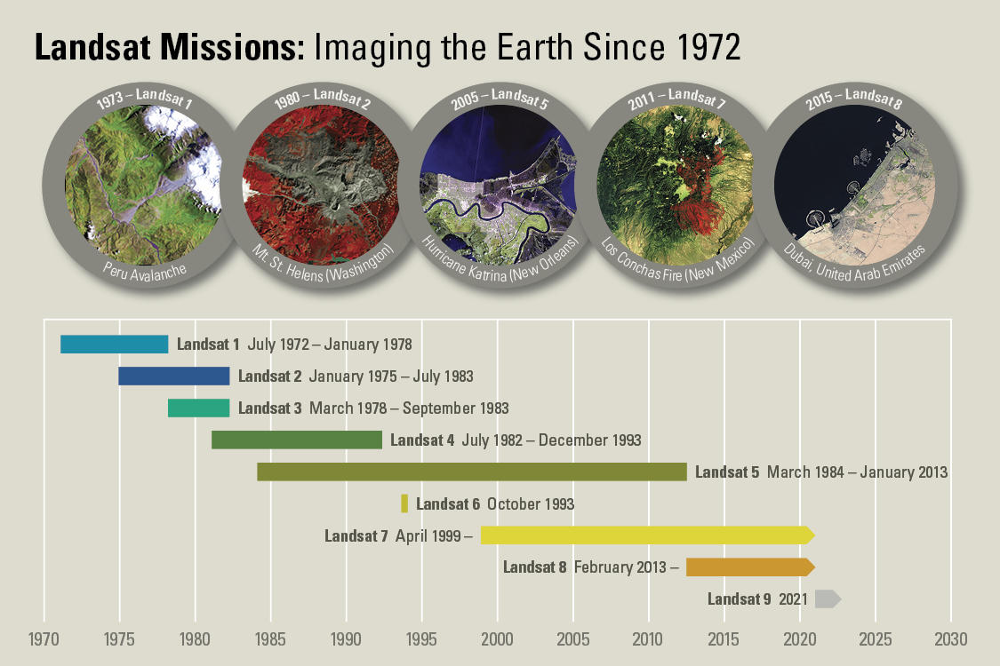

What You'll Learn
- Understand what an ImageCollection is and how it differs from a single Image
- Filter collections by date using
filterDate() - Filter collections by location using
filterBounds() - Sort collections by metadata properties like cloud cover
- Extract a single image from a collection using
first()
Building On Previous Learning
This lab builds on Lab 2 where you loaded a single image by its ID. Now you'll learn to search through entire collections to find exactly the image you need.
Why This Matters
The Earth Engine Data Catalog contains petabytes of data - more images than you could ever browse manually. Filtering is how you:
- Find cloud-free imagery for your study area
- Select images from specific seasons or years
- Build time series to track changes
- Avoid computational timeouts by reducing dataset size
Without filtering, Earth Engine would try to process millions of images at once!
Before You Start
- Prerequisites: Finish Lab 5 and review the lesson on image collections, filtering, and sorting.
- Estimated time: 60 minutes
- Materials: Earth Engine access, bookmarked collection IDs, and the filtering criteria you plan to test.
Key Terms
- Image Collection
- A stack of images, typically containing multiple images over time or space (e.g., all Landsat 8 images ever captured).
- Filter
- An operation that reduces a collection to only images matching specific criteria (date, location, properties).
- Metadata
- Information about an image, such as capture date, cloud cover percentage, sun elevation, etc.
- CLOUD_COVER
- A metadata property in Landsat images indicating the percentage of the scene covered by clouds (0-100).
- Path/Row
- The grid system Landsat uses to organize images. Paths run north-south; rows run east-west.
Lab Lecture: Fall 2023 Recording
Introduction: The Landsat Program

The Landsat program from NASA and the United States Geological Survey (USGS) has launched a sequence of Earth observation satellites named Landsat 1, 2, etc. Landsats have been returning images since 1972, making that collection of images the longest continuous satellite-based observation of the Earth's surface.
The Landsat program has revolutionized remote sensing and land observation. The program was initially developed to improve the understanding of the Earth's terrestrial and aquatic ecosystems, but its use quickly grew to encompass a wide range of fields, such as natural resource exploration, disaster preparedness, urban planning, and agricultural monitoring.

The Landsat satellites are designed to capture detailed images of the Earth's surface on a regular basis with a spatial resolution of 30 meters per pixel in visible and near-infrared light bands, with additional infrared and thermal band capabilities. Additionally, Landsat data is freely available to the public, making it a valuable tool for both professional and amateur users.
Lab Instructions
-
Part 1 - Viewing an Image Collection
Open up Google Earth Engine Code: https://code.earthengine.google.com/
Copy and paste the following code into the center panel and click Run:
///// // View an Image Collection ///// // Import the Landsat 8 Raw Collection. var Landsat8 = ee.ImageCollection('LANDSAT/LC08/C02/T1'); // Print the size of the Landsat 8 dataset. print('The size of the Landsat 8 image collection is:', Landsat8.size()); // Try to print the image collection. // WARNING! Running the print code immediately below produces an error because // the Console cannot print more than 5000 elements. print(Landsat8); // Add the Landsat 8 dataset to the map as a mosaic. Map.addLayer(Landsat8, { bands: ['B4', 'B3', 'B2'], min: 5000, max: 15000 }, 'Landsat 8 Image Collection');Understanding the code:
ee.ImageCollection()- Loads an entire collection of images.size()- Returns the number of images in the collection- When you add a collection to the map, Earth Engine mosaics all images together
While the enormous image catalog is accessed, it could take a couple of minutes to see the result. You may note individual "scenes" being drawn, which equate to the way that the Landsat program partitions Earth into "paths" and "rows."

Screenshot of Landsat being drawn on Google Earth Engine About Rows and Paths: Images from Landsat are placed in a grid pattern. A row is a sequence of images taken at the same latitude, while a path is a series of images taken at the same longitude. Paths are numbered from west to east starting at the 180-degree longitude line. Rows are numbered from south to north starting at the equator.
Notice the high amount of cloud cover and the "layered" look. This is because Earth Engine is drawing each of the images one on top of the other.

The number of Landsat images in the collection (over 1 million!) Expected Console Output
You should see a number greater than 1,000,000 and an error about too many elements to print.

Error from trying to print too many elements (this is expected!) -
Part 2 - Comment Out Code
Edit your code to "comment out" the last two code commands using
//at the beginning of each line. This will speed up your code in subsequent sections.
Commented out code prevents it from running Keyboard Shortcut
Select multiple lines and press
Ctrl + /(Windows) orCmd + /(Mac) to toggle comments on/off quickly. -
Part 3 - Filter by Date
Now we will look at finding "the needle in the haystack." The basic approach to GEE is to add an image collection that brings in every image, then to filter the collection until you find the exact image you're interested in.
filterDateallows us to narrow down the date range of the ImageCollection. Copy and paste:///// // Filter an Image Collection ///// // Filter the collection by date. var LandsatWinter = Landsat8.filterDate('2020-12-01', '2021-03-01'); Map.addLayer(LandsatWinter, { bands: ['B4', 'B3', 'B2'], min: 5000, max: 15000 }, 'Winter Landsat 8'); print('The size of the Winter Landsat 8 image collection is:', LandsatWinter.size());Understanding filterDate():
- Takes two arguments: start date and end date
- Format:
'YYYY-MM-DD'(year-month-day) - The end date is exclusive - images from that exact date are not included
The result will load much faster because we filtered by date. Notice that before we had over a million images; after filtering, we have thousands.

Results from filtering by date - down to thousands of images Comment out the Map.addLayer for winter imagery before moving on.

Commented out winter imagery code -
Part 4 - Filter by Location
The filtering tool
filterBoundsis based on a location - for example, a point, polygon, or other geometry. Copy and paste:///// // Filter by location ///// // Create an Earth Engine Point object. var pointFL = ee.Geometry.Point([-82.32, 29.65]); // Filter the collection by location using the point. var LandsatFL = LandsatWinter.filterBounds(pointFL); Map.addLayer(LandsatFL, { bands: ['B4', 'B3', 'B2'], min: 5000, max: 15000 }, 'FL Landsat 8'); // Add the point to the map to see where it is. Map.addLayer(pointFL, {}, 'Point FL'); print('The size of the Gainesville Winter Landsat 8 image collection is: ', LandsatFL.size());Understanding filterBounds():
- Keeps only images that intersect with your geometry
- Works with points, polygons, rectangles, or any geometry
- Dramatically reduces the collection size by focusing on your study area
Note that we add the pointFL to the map with an empty dictionary
{}for the visParams argument - we are not specifying visualization parameters, using defaults instead.Run the code. Now only images that intersect our point have been selected. Note we only have 12 images.

Filtered by location - down to just 12 images! Try It
Change the coordinates to your hometown and see how many images are available for that location during winter 2020-2021.
-
Part 5 - Select First Image
The
firstfunction selects the first image in an ImageCollection. This allows us to place a single image on the screen. Because images are stored in time order, it will select the earliest image.
The first (earliest) image in the filtered collection Notice the image is very cloudy. Normally this is a problem for analysis - we prefer images without clouds. Each image in Landsat's collection has a cloud cover rating we can use.
-
Part 6 - Sort by Cloud Cover
The basic approach is to sort the ImageCollection by cloud cover, then add the first image:
// Sort the image collection by cloud cover var LandsatSort = LandsatFL.sort('CLOUD_COVER'); // Select the first image in the sorted collection. var LandsatFirstSort = LandsatSort.first(); // Display the first image in the sorted collection. Map.centerObject(LandsatFirstSort, 7); Map.addLayer(LandsatFirstSort, { bands: ['B4', 'B3', 'B2'], min: 5000, max: 15000 }, 'Sort Landsat 8');Understanding the workflow:
.sort('CLOUD_COVER')- Orders images from lowest to highest cloud cover.first()- After sorting, the first image is the one with least cloudsMap.centerObject()- Centers the map on your image at zoom level 7
Now you have a single Landsat image with no cloud cover, filtered for Gainesville during the winter of 2020-2021!

Cloud-free sorted image result The Complete Filtering Pipeline
1,000,000+ images → filterDate → ~50,000 images → filterBounds → 12 images → sort + first → 1 cloud-free image
Full code link: GEE Code
Check Your Understanding
- Why does
print(Landsat8)produce an error? - What's the difference between
filterDateandfilterBounds? - If you use
.first()without sorting first, which image do you get? - How would you find the most cloudy image instead of the least?
Hint for Q4: Check the documentation for .sort() - there's an optional second
argument.
Troubleshooting
Solution: Your filters aren't reducing the collection enough. Add more filters (narrower date range, smaller geometry) before trying to display or process.
Solution: Your filters may be too restrictive. Try widening the date range or check that your point coordinates are correct (longitude first, then latitude!).
Solution: Your min/max visualization parameters don't match the data. For Landsat Collection 2, try min: 5000, max: 15000 for raw data.
Key Takeaways
ee.ImageCollection()loads entire archives (potentially millions of images)- Always filter collections before processing to avoid timeouts
filterDate(start, end)limits by time periodfilterBounds(geometry)limits by location.sort('CLOUD_COVER').first()finds the clearest image- Filters can be chained:
.filterDate().filterBounds().sort().first()
Common Mistakes to Avoid
- Wrong coordinate order: It's
[longitude, latitude]not[latitude, longitude] - Forgetting to filter: Processing unfiltered collections causes timeouts
- Date format errors: Use
'YYYY-MM-DD'with quotes and dashes - Property name typos:
'CLOUD_COVER'is case-sensitive
Challenge
Challenge Task
Using the filtering method, create code that displays a single cloud-free image of the Champs De Mars in Paris, France, in the summer of 2022 (June-August). Display the image in both Natural Color and Color Infrared.
Requirements:
- Filter by date (summer 2022)
- Filter by location (Paris coordinates: approximately 2.29, 48.86)
- Sort by cloud cover
- Display in two band combinations (True Color and False Color)
- Follow good coding practices with detailed comments
📋 Lab Submission
Subject: Lab 6 - Image Collections - [Your Name]
Include:
- Shareable link to your GEE script
- Screenshots of Paris in both natural color and false color
- Well-commented code explaining your approach